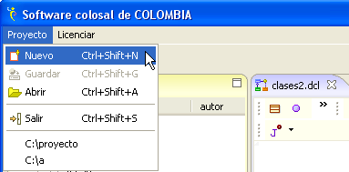
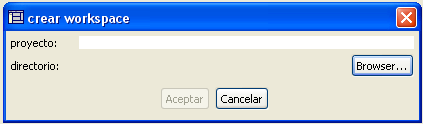
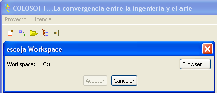
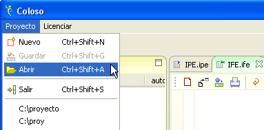
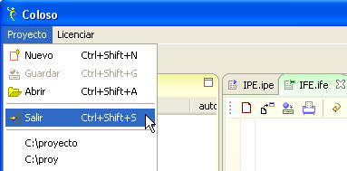
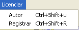
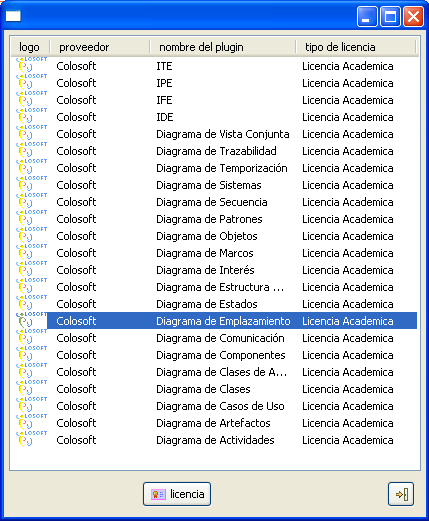
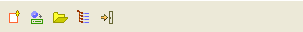
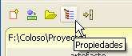
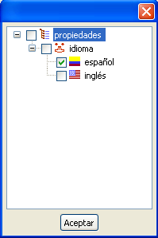

Menu Principal

Figura 1. Menu Principal de Coloso
El menu general es una versión minimalista de los menus en otras
herramientas similares . Posee dos funcionalidades básicas que son el
manejo de proyectos y la del licenciamiento de la herramienta.
Nuevo: agregará un proyecto
al espacio de trabajo. Dentro de la etiqueta proyecto se
digita
el nombre y en directorio el lugar donde se colocarán los archivos del
proyecto. Si no se escoge ningún directorio, se creará una carpeta con
el nombre del proyecto en el medio lógico por defecto (en el caso de
Windows será en la partición c:\).
Hay que notar que Coloso
permite varios proyectos abiertos al mismo tiempo, por lo que la
creación de un proyecto no afectará a los que ya se tengan abiertos.


Figura 2. Crear proyecto
Guardar por su parte, guardará los cambios de todos los diagramas abiertos.


Figura 3. Guardar proyecto
Abrir le permitirá cargar un poryecto ya existente dentro del espacio de trabajo.

Figura 4. Abrir proyecto
Salir cierra la herramienta. Hay que tener en cuenta que todos los cambios
que no se hayan guardado se perderán.

Figura 5. Salir del aplicativo
Licencia contiene el autor y el licenciamiento de cada uno de los componentes funcionando dentro del entorno. Al instalar cada plugin este deberá tener asociado un tipo de licencia, académica o comercial y mediante esta herramienta se puede comprobar de que tipo es.


Figura 5. Licenciar los componentes de Coloso
Este menu tiene un reflejo de las funcionalidades, en la barra que se encuentra abajo de éste. En esta barra se encuentran accesos rápidos para crear un nuevo proyecto, abrir uno existente , guardar todos los cambios en los esquemas abiertos y salir.

Figura 6. Elementos del Menu Principal en la barra general de Coloso
Adicionalmente existe el boton de propiedades, mediante el cual se pude configurar el idioma de toda la interfaz gráfica de Coloso.

Figura 7. Propiedades de proyecto
Para cambiar el idioma basta seleccionar el deseado (por el momento inglés o español). Hay que tener en cuenta que los proyectos creados bajo diferentes idiomas serán incompatibles entre si, por lo que un proyecto creado en español solo se podrá abrir cuando este idioma esté habilitado, de igual manera para los proyectos en inglés.

Figura 8. Propiedades del entorno Coloso